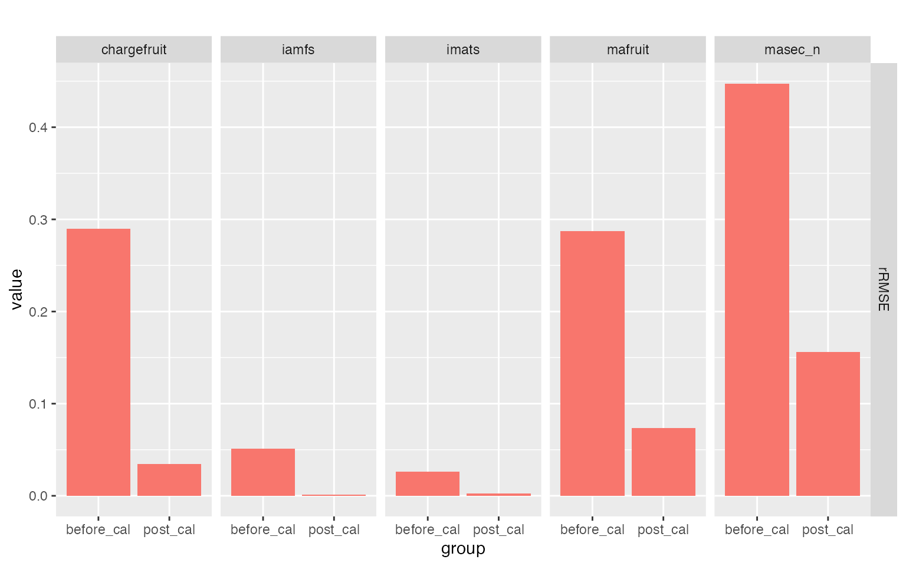
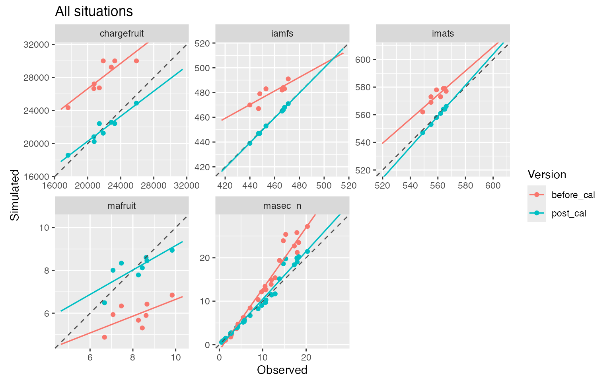

Calibrating a complex crop model using the AgMIP protocol
Samuel Buis
2026-02-04
Source:vignettes/AgMIP_Calibration_Protocol.Rmd
AgMIP_Calibration_Protocol.RmdIntroduction
This vignette illustrates the use of the
run_protocol_agmip function on a realistic and complex crop
model (STICS) and a multi-environment dataset. Its goal is to
demonstrate the complete workflow, from protocol specification to the
analysis of results.
This document intentionally focuses on a representative use case and
does not aim at exhaustively documenting all features of the function.
Advanced options (e.g. parameter constraints, variable transformations,
custom optimization settings, alternative information criteria) are
therefore not covered here and are documented in the function reference
manual (?CroptimizR::run_protocol_agmip).
The AgMIP calibration protocol is described in detail in Wallach et al (2024) and Wallach et al (2025). Only a brief contextual description is given here.
Scientific and technical context
The AgMIP calibration protocol
The AgMIP calibration protocol is a two-step procedure:
- Step 6: sequential parameter estimation by groups of variables, with automatic selection of candidate parameters based on an information criterion.
- Step 7: joint re-estimation of all selected parameters using all available observations, by weighted least squares.
In this vignette, we focus on how to describe and run this protocol
using CroptimizR, not on re-describing the protocol itself. The reader
is referred to Wallach et al. (2024, 2025) for the scientific rationale.
A more detailed, implementation-oriented description of the protocol,
including the precise sequence of operations, default settings,
optimization strategy, and selection rules, as implemented in CroptimizR
is provided in the documentation of run_protocol_agmip.
The STICS model and CroptimizR wrappers
This example uses the STICS crop model, but CroptimizR can in fact be applied to any crop model, provided that a suitable wrapper is available. Guidelines and examples for implementing wrappers are provided in the vignette: https://sticsrpacks.github.io/CroptimizR/articles/Designing_a_model_wrapper.html
Note that wrappers already exist for several models. For more details, see the Get started page or contact the authors.
The dataset
The dataset used in this example comes from the synthetic experiment defined in Wallach et al. (2024).
It includes 22 environments (called situations in CroptimizR terminology). Fourteen situations are used for calibration (six different sites, five different years) and eight for evaluation. Each situation includes all the necessary information to run the crop model (soil, management, weather). Corresponding STICS input files were prepared beforehand.
Observations and data formatting
Observed variables
The observed variables used for model calibration in this example include:
- days from 1st January of the sowing year to BBCH30, BBCH55, and
BBCH90 (STICS variables
iamfs,ilaxs, andimats), - biomass at various dates (STICS variable
masec_n), in t.ha-1, - grain number (STICS variable
chargefruit), in grains.m-2, - grain yield (STICS variable
mafruit), in t.ha-1.
Observations of plant nitrogen content and seed protein, which were
part of the original dataset, are not included here because they are not
directly simulated by the STICS model. They could be derived from
variables simulated by STICS using the transform_sim
argument (as done in Wallach et al., 2024), but this is not illustrated
here for the sake of simplicity.
The cropr format
All observations must be formatted in the cropr format,
i.e. as a named list of data frames (or tibble), each element being
named after the corresponding situation (see the Get
started vignette of CroptimizR for details).
obs_list <- readRDS(file.path(system.file(
file.path("extdata", "AgMIP_protocol", "vignette_data"),
package = "CroptimizR"
), "obs_list.Rds"))
# Show the first two situations
obs_list[1:2]
#> $`Site2-culA-10-tec2`
#> Date iamfs ilaxs imats masec_n chargefruit mafruit
#> 1 2010-12-31 455 509 556 NA 13539.42 3.808691
#>
#> $`Site2-culA-11-tec7`
#> Date iamfs ilaxs imats masec_n chargefruit mafruit
#> 1 2011-04-01 NA NA NA 0.8574894 NA NA
#> 2 2011-04-20 NA NA NA 3.3697419 NA NA
#> 3 2011-04-29 NA NA NA 4.7809235 NA NA
#> 4 2011-05-19 NA NA NA 6.7784120 NA NA
#> 5 2011-12-31 450 492 544 NA NA NAHere, we displayed the available observations for the first two
situations, Site2-culA-10-tec2 and
Site2-culA-11-tec7. In this example, end-of-season
observations are assigned to the last day of the year to ensure that
these observed values are compared with the final simulated values.
Describing the calibration protocol
Principle
Describing the AgMIP protocol for CroptimizR essentially requires specifying:
- the groups of observed variables and their order of use in Step 6,
- the list of major and candidate parameters associated with each group,
- the default values and bounds of all parameters.
Excel-based specification
This information can be provided using a single Excel file containing at least three sheets named:
-
variables, -
major_parameters, -
candidate_parameters.
In this example, this file is named
agmip_protocol_vignette.xlsx and is located in the
data/AgMIP_protocol folder. Here is a preview of this
file:

The order of the variable groups in the variables sheet
is particularly important, as it determines their sequence in Step 6 of
the protocol.
The descriptions columns are not used by CroptimizR and
are optional. They are only useful for documentation purposes.
Note that CroptimizR provides helper functions to make it easy to get started with the Excel-based protocol specification:
-
get_agmip_protocol_template()returns the official Excel template that must be filled by the user to define a new protocol. -
get_agmip_protocol_example()provides a fully worked example.
Although the protocol is provided here as an Excel file for
convenience and readability, the calibration procedure actually relies
on two R objects, step and param_info, which
fully describe the protocol. In the following section, we examine their
structure to understand how the protocol is defined for this specific
example.
Converting the Excel file to R objects
The Excel file is converted into R data structures using the
load_protocol_agmip function.
Here, we load the protocol description file associated with this vignette:
protocol_descr <- CroptimizR::load_protocol_agmip(
protocol_file_path = system.file(
file.path("extdata", "AgMIP_protocol", "agmip_protocol_vignette.xlsx"),
package = "CroptimizR"
)
)
names(protocol_descr)
#> [1] "step" "param_info"
step <- protocol_descr$step
param_info <- protocol_descr$param_infoIn this case, the function returns a list with two elements:
step and param_info. We assigned them to two
separate objects to improve readability in the rest of the report and
code. These two objects are the core inputs needed to describe Step 6 of
the protocol.
Note that creating this Excel file is not mandatory. Users may directly build these R objects by hand, but the Excel-based workflow is recommended for clarity, reproducibility, and ease of editing.
Structure of the protocol for this example
names(step)
#> [1] "phenology" "plant_biomass" "grain_number" "yield"Given the available observed variables and the structure of the STICS model, the order defined for the successive groups in Step 6 is:
phenology → plant_biomass → grain_number → yield
Parameters associated with the phenology group are therefore estimated first and then fixed to their estimated values in the subsequent groups. Then parameters of the plant_biomass group are estimated, and so on.
The order of the groups is chosen to minimize feedback, i.e. the influence of a simulated variable on variables that appear earlier in the sequence.
Phenology defines the timing of the main developmental stages of the crop cycle. Plant biomass accumulation depends on these stages and on their synchronisation with environmental conditions. Finally, yield components (first grain number, then grain weight, during two successive phenological phases) depend on biomass growth rate and on the amount of accumulated vegetative biomass. All these processes are therefore interdependent and occur in a well-defined causal order in the STICS model, which is reflected in the calibration strategy.
Example: the phenology group
step[["phenology"]]
#> $major_param
#> [1] "stlevamf" "stamflax" "stdrpmat"
#>
#> $candidate_param
#> [1] "jvc" "sensrsec" "belong" "jvcmini" "stressdev"
#>
#> $obs_var
#> [1] "iamfs" "ilaxs" "imats"The major parameters should be chosen with the main goal of reducing bias. A good choice is typically a parameter that affects the simulated values in all environments and behaves approximately like an additive constant.
For phenology, the major parameters chosen here are the thermal time
requirements to reach the different observed stages:
stlevamf, stamflax, stdrpmat.
For this group, there are three major parameters because there are three observed variables (BBCH30, BBCH55, BBCH90). The protocol recommends selecting one major parameter per observed variable. For groups with multiple measurements over time, it is common to select two or three major parameters (but rarely more), typically either parameters that affect the variable at different periods of the crop cycle, or parameters that separately control the average level and the rate of change over time.
The candidate parameters are those expected to explain part of the variability between environments. They should be ordered, as far as possible, by decreasing expected importance. There is no strict limit on their number, but increasing it increases computation time.
In this example, five candidate parameters are used for the phenology
group: jvc, sensrsec, belong,
jvcmini, stressdev. They were ordered based on
expert knowledge of the STICS model.
During calibration of the different groups, the major parameters are first estimated. Then candidate parameters are added one by one to the list of estimated parameters and kept only if the resulting information criterion value (AICc by default) improves. Non-selected candidates are fixed to their default values, as are all parameters belonging to groups that have not yet been processed.
Parameter information
# Display only the first lines of each component for readability
lapply(param_info, head)
#> $lb
#> stlevamf stamflax stdrpmat efcroiveg efcroirepro cgrain
#> 150.00 150.00 500.00 3.00 3.00 0.03
#>
#> $ub
#> stlevamf stamflax stdrpmat efcroiveg efcroirepro cgrain
#> 4e+02 5e+02 9e+02 6e+00 6e+00 4e-02
#>
#> $default
#> stlevamf stamflax stdrpmat efcroiveg efcroirepro cgrain
#> 324.8000 446.8000 820.0000 5.3000 3.5000 0.0324All information required to automate the protocol (parameter bounds
and default values) is stored in the param_info object.
Running the protocol
Running the whole calibration protocol is done with a single call to
run_protocol_agmip.
res <- CroptimizR::run_protocol_agmip(
obs_list = obs_list,
model_function = SticsOnR::stics_wrapper,
model_options = model_options,
param_info = param_info,
transform_var = c(masec_n = function(x) log(pmax(x, 1e-6))),
step = step
)Note that
run_protocol_agmipincludes many optional arguments not illustrated here (constraints, transformations, optimization settings, etc.). See?CroptimizR::run_protocol_agmipfor details.
Some model-specific initialization steps (construction of
model_options for the stics_wrapper) are not
shown here for the sake of brevity and because they are
model-dependent.
In this example, we illustrate the use of the optional
transform_var argument to apply a logarithmic
transformation to biomass observations (masec_n). Such
transformations are recommended when the variance of the errors is
assumed to be proportional to the magnitude of the variable. The
pmax(x, 1e-6) construction ensures that zero values are
replaced by a small positive number before applying the log, preventing
numerical errors.
During execution, the main steps of the protocol and associated results are displayed in the console:
AgMIP Calibration Phase IV protocol: automatic calculation steps 6 and 7
(see doi.org/10.1016/j.envsoft.2024.106147 for a detailed description of the full protocol)
-- Step6
---- Step6.phenology
------ Parameter automatic selection procedure: Step6.phenology.Major(s)
Major parameter(s): stlevamf stamflax stdrpmat
Estimated parameter(s): stlevamf stamflax stdrpmat
Forced parameter(s): efcroiveg= 5.30000, efcroirepro= 3.50000, cgrain= 0.03240, vitircarbT= 0.00031, jvc= 58.36400, sensrsec= 0.80000, belong= 0.02280, jvcmini= 11.80000, stressdev= 0.60000, dlaimaxbrut= 0.00319, durvieF=260.00000, vlaimax= 2.38000, psisto= 12.60000, psiturg= 10.60000, nbjgrain= 36.00000, pgrainmaxi= 0.05528, cgrainv0= 0.04200
Observed variable(s) used: iamfs, ilaxs, imats
Working: 10.00%. Estimated remaining time: 60.10 mins
Working: 20.00%. Estimated remaining time: 44.22 mins
Working: 30.00%. Estimated remaining time: 35.92 mins
Working: 40.00%. Estimated remaining time: 33.53 mins
Working: 50.00%. Estimated remaining time: 27.02 mins
Working: 60.00%. Estimated remaining time: 22.63 mins
Working: 70.00%. Estimated remaining time: 16.87 mins
Working: 80.00%. Estimated remaining time: 11.20 mins
Working: 90.00%. Estimated remaining time: 5.35 mins
Working: 100.00%. Estimated remaining time: 0.00 mins
Estimated value for stlevamf: 192
Estimated value for stamflax: 256
Estimated value for stdrpmat: 500
Minimum value of the criterion: 785
Complementary graphs and results can be found in /storage/simple/projects/inra_ea/emmah/sbuis/AgMIP_calibration_Protocol_vignette/AgMIP_protocol_step6/Step6.phenology/param_select_step1
Current value of the information criterion: 130
------ Parameter automatic selection procedure: Step6.phenology.Candidate1
Major parameter(s): stlevamf stamflax stdrpmat
Current candidate parameter evaluated: jvc
Estimated parameter(s): stlevamf stamflax stdrpmat jvc
Forced parameter(s): efcroiveg= 5.30000, efcroirepro= 3.50000, cgrain= 0.03240, vitircarbT= 0.00031, sensrsec= 0.80000, belong= 0.02280, jvcmini= 11.80000, stressdev= 0.60000, dlaimaxbrut= 0.00319, durvieF=260.00000, vlaimax= 2.38000, psisto= 12.60000, psiturg= 10.60000, nbjgrain= 36.00000, pgrainmaxi= 0.05528, cgrainv0= 0.04200
Observed variable(s) used: iamfs, ilaxs, imats
Working: 20.00%. Estimated remaining time: 17.98 mins
Working: 40.00%. Estimated remaining time: 13.30 mins
Working: 60.00%. Estimated remaining time: 9.31 mins
Working: 80.00%. Estimated remaining time: 4.79 mins
Working: 100.00%. Estimated remaining time: 0.00 mins
Estimated value for stlevamf: 210
Estimated value for stamflax: 254
Estimated value for stdrpmat: 500
Estimated value for jvc: 36
Minimum value of the criterion: 683
Complementary graphs and results can be found in /storage/simple/projects/inra_ea/emmah/sbuis/AgMIP_calibration_Protocol_vignette/AgMIP_protocol_step6/Step6.phenology/param_select_step2
Current value of the information criterion: 126
Candidate parameter jvc is selected
------ Parameter automatic selection procedure: Step6.phenology.Candidate2
Major parameter(s): stlevamf stamflax stdrpmat
Current candidate parameter evaluated: sensrsec
Estimated parameter(s): stlevamf stamflax stdrpmat jvc sensrsec
Forced parameter(s): efcroiveg= 5.30000, efcroirepro= 3.50000, cgrain= 0.03240, vitircarbT= 0.00031, belong= 0.02280, jvcmini= 11.80000, stressdev= 0.60000, dlaimaxbrut= 0.00319, durvieF=260.00000, vlaimax= 2.38000, psisto= 12.60000, psiturg= 10.60000, nbjgrain= 36.00000, pgrainmaxi= 0.05528, cgrainv0= 0.04200
Observed variable(s) used: iamfs, ilaxs, imats
Working: 20.00%. Estimated remaining time: 25.94 mins
Working: 40.00%. Estimated remaining time: 17.26 mins
Working: 60.00%. Estimated remaining time: 10.64 mins
Working: 80.00%. Estimated remaining time: 5.42 mins
Working: 100.00%. Estimated remaining time: 0.00 mins
Estimated value for stlevamf: 216
Estimated value for stamflax: 253
Estimated value for stdrpmat: 500
Estimated value for jvc: 28
Estimated value for sensrsec: 0.91
Minimum value of the criterion: 626
Complementary graphs and results can be found in /storage/simple/projects/inra_ea/emmah/sbuis/AgMIP_calibration_Protocol_vignette/AgMIP_protocol_step6/Step6.phenology/param_select_step3
Current value of the information criterion: 125
Candidate parameter sensrsec is selected
------ Parameter automatic selection procedure: Step6.phenology.Candidate3
Major parameter(s): stlevamf stamflax stdrpmat
Current candidate parameter evaluated: belong
Estimated parameter(s): stlevamf stamflax stdrpmat jvc sensrsec belong
Forced parameter(s): efcroiveg= 5.30000, efcroirepro= 3.50000, cgrain= 0.03240, vitircarbT= 0.00031, jvcmini= 11.80000, stressdev= 0.60000, dlaimaxbrut= 0.00319, durvieF=260.00000, vlaimax= 2.38000, psisto= 12.60000, psiturg= 10.60000, nbjgrain= 36.00000, pgrainmaxi= 0.05528, cgrainv0= 0.04200
Observed variable(s) used: iamfs, ilaxs, imats
Working: 20.00%. Estimated remaining time: 23.38 mins
Working: 40.00%. Estimated remaining time: 19.12 mins
Working: 60.00%. Estimated remaining time: 12.34 mins
Working: 80.00%. Estimated remaining time: 5.93 mins
Working: 100.00%. Estimated remaining time: 0.00 mins
Estimated value for stlevamf: 216
Estimated value for stamflax: 256
Estimated value for stdrpmat: 500
Estimated value for jvc: 29
Estimated value for sensrsec: 0.98
Estimated value for belong: 0.011
Minimum value of the criterion: 616
Complementary graphs and results can be found in /storage/simple/projects/inra_ea/emmah/sbuis/AgMIP_calibration_Protocol_vignette/AgMIP_protocol_step6/Step6.phenology/param_select_step4
Current value of the information criterion: 127
Candidate parameter belong is rejected
------ Parameter automatic selection procedure: Step6.phenology.Candidate4
Major parameter(s): stlevamf stamflax stdrpmat
Current candidate parameter evaluated: jvcmini
Estimated parameter(s): stlevamf stamflax stdrpmat jvc sensrsec jvcmini
Forced parameter(s): efcroiveg= 5.30000, efcroirepro= 3.50000, cgrain= 0.03240, vitircarbT= 0.00031, belong= 0.02280, stressdev= 0.60000, dlaimaxbrut= 0.00319, durvieF=260.00000, vlaimax= 2.38000, psisto= 12.60000, psiturg= 10.60000, nbjgrain= 36.00000, pgrainmaxi= 0.05528, cgrainv0= 0.04200
Observed variable(s) used: iamfs, ilaxs, imats
Working: 20.00%. Estimated remaining time: 19.37 mins
Working: 40.00%. Estimated remaining time: 18.16 mins
Working: 60.00%. Estimated remaining time: 12.11 mins
Working: 80.00%. Estimated remaining time: 5.82 mins
Working: 100.00%. Estimated remaining time: 0.00 mins
Estimated value for stlevamf: 230
Estimated value for stamflax: 257
Estimated value for stdrpmat: 503
Estimated value for jvc: 29
Estimated value for sensrsec: 0.94
Estimated value for jvcmini: 3.4
Minimum value of the criterion: 579
Complementary graphs and results can be found in /storage/simple/projects/inra_ea/emmah/sbuis/AgMIP_calibration_Protocol_vignette/AgMIP_protocol_step6/Step6.phenology/param_select_step5
Current value of the information criterion: 125
Candidate parameter jvcmini is selected
------ Parameter automatic selection procedure: Step6.phenology.Candidate5
Major parameter(s): stlevamf stamflax stdrpmat
Current candidate parameter evaluated: stressdev
Estimated parameter(s): stlevamf stamflax stdrpmat jvc sensrsec jvcmini stressdev
Forced parameter(s): efcroiveg= 5.30000, efcroirepro= 3.50000, cgrain= 0.03240, vitircarbT= 0.00031, belong= 0.02280, dlaimaxbrut= 0.00319, durvieF=260.00000, vlaimax= 2.38000, psisto= 12.60000, psiturg= 10.60000, nbjgrain= 36.00000, pgrainmaxi= 0.05528, cgrainv0= 0.04200
Observed variable(s) used: iamfs, ilaxs, imats
Working: 20.00%. Estimated remaining time: 34.43 mins
Working: 40.00%. Estimated remaining time: 24.73 mins
Working: 60.00%. Estimated remaining time: 18.72 mins
Working: 80.00%. Estimated remaining time: 9.16 mins
Working: 100.00%. Estimated remaining time: 0.00 mins
Estimated value for stlevamf: 225
Estimated value for stamflax: 277
Estimated value for stdrpmat: 518
Estimated value for jvc: 34
Estimated value for sensrsec: 0.99
Estimated value for jvcmini: 3.3
Estimated value for stressdev: 0.51
Minimum value of the criterion: 448
Complementary graphs and results can be found in /storage/simple/projects/inra_ea/emmah/sbuis/AgMIP_calibration_Protocol_vignette/AgMIP_protocol_step6/Step6.phenology/param_select_step6
Current value of the information criterion: 117
Candidate parameter stressdev is selected
------ End of parameter selection procedure
---- Summary of the Parameter Selection procedure results
Selected step:6
Selected parameters: stlevamf,stamflax,stdrpmat,jvc,sensrsec,jvcmini,stressdev
Estimated value for stlevamf: 224.72
Estimated value for stamflax: 277.26
Estimated value for stdrpmat: 517.96
Estimated value for jvc: 34.37
Estimated value for sensrsec: 0.99
Estimated value for jvcmini: 3.35
Estimated value for stressdev: 0.51
Results of the parameter selection procedure are stored in /storage/simple/projects/inra_ea/emmah/sbuis/AgMIP_calibration_Protocol_vignette/AgMIP_protocol_step6/Step6.phenology/optim_results.Rdata
A table summarizing the results obtained at the different steps is stored in /storage/simple/projects/inra_ea/emmah/sbuis/AgMIP_calibration_Protocol_vignette/AgMIP_protocol_step6/Step6.phenology/param_selection_steps.csv
Graphs and detailed results obtained for the different parameter selection steps can be found in /storage/simple/projects/inra_ea/emmah/sbuis/AgMIP_calibration_Protocol_vignette/AgMIP_protocol_step6/Step6.phenology/param_select_step# folders.
---- End of Step Step6.phenology
---- Step6.plant_biomass
------ Parameter automatic selection procedure: Step6.plant_biomass.Major(s)
Major parameter(s): efcroiveg efcroirepro
Estimated parameter(s): efcroiveg efcroirepro
Forced parameter(s): stlevamf=224.71943, stamflax=277.26244, stdrpmat=517.96341, jvc= 34.37244, sensrsec= 0.98633, jvcmini= 3.34810, stressdev= 0.51269, cgrain= 0.03240, vitircarbT= 0.00031, belong= 0.02280, dlaimaxbrut= 0.00319, durvieF=260.00000, vlaimax= 2.38000, psisto= 12.60000, psiturg= 10.60000, nbjgrain= 36.00000, pgrainmaxi= 0.05528, cgrainv0= 0.04200
Observed variable(s) used: masec_n
Working: 10.00%. Estimated remaining time: 21.64 mins
Working: 20.00%. Estimated remaining time: 17.33 mins
Working: 30.00%. Estimated remaining time: 17.18 mins
Working: 40.00%. Estimated remaining time: 14.79 mins
Working: 50.00%. Estimated remaining time: 11.67 mins
Working: 60.00%. Estimated remaining time: 9.87 mins
Working: 70.00%. Estimated remaining time: 7.56 mins
Working: 80.00%. Estimated remaining time: 4.93 mins
Working: 90.00%. Estimated remaining time: 2.46 mins
Working: 100.00%. Estimated remaining time: 0.00 mins
Estimated value for efcroiveg: 3
Estimated value for efcroirepro: 4.3
Minimum value of the criterion: 7.1
Complementary graphs and results can be found in /storage/simple/projects/inra_ea/emmah/sbuis/AgMIP_calibration_Protocol_vignette/AgMIP_protocol_step6/Step6.plant_biomass/param_select_step1
Current value of the information criterion: -76
------ Parameter automatic selection procedure: Step6.plant_biomass.Candidate1
Major parameter(s): efcroiveg efcroirepro
Current candidate parameter evaluated: dlaimaxbrut
Estimated parameter(s): efcroiveg efcroirepro dlaimaxbrut
Forced parameter(s): stlevamf=224.71943, stamflax=277.26244, stdrpmat=517.96341, jvc= 34.37244, sensrsec= 0.98633, jvcmini= 3.34810, stressdev= 0.51269, cgrain= 0.03240, vitircarbT= 0.00031, belong= 0.02280, durvieF=260.00000, vlaimax= 2.38000, psisto= 12.60000, psiturg= 10.60000, nbjgrain= 36.00000, pgrainmaxi= 0.05528, cgrainv0= 0.04200
Observed variable(s) used: masec_n
Working: 20.00%. Estimated remaining time: 24.35 mins
Working: 40.00%. Estimated remaining time: 16.90 mins
Working: 60.00%. Estimated remaining time: 10.37 mins
Working: 80.00%. Estimated remaining time: 5.19 mins
Working: 100.00%. Estimated remaining time: 0.00 mins
Estimated value for efcroiveg: 4.6
Estimated value for efcroirepro: 4.2
Estimated value for dlaimaxbrut: 0.00029
Minimum value of the criterion: 0.82
Complementary graphs and results can be found in /storage/simple/projects/inra_ea/emmah/sbuis/AgMIP_calibration_Protocol_vignette/AgMIP_protocol_step6/Step6.plant_biomass/param_select_step2
Current value of the information criterion: -169
Candidate parameter dlaimaxbrut is selected
------ Parameter automatic selection procedure: Step6.plant_biomass.Candidate2
Major parameter(s): efcroiveg efcroirepro
Current candidate parameter evaluated: durvieF
Estimated parameter(s): efcroiveg efcroirepro dlaimaxbrut durvieF
Forced parameter(s): stlevamf=224.71943, stamflax=277.26244, stdrpmat=517.96341, jvc= 34.37244, sensrsec= 0.98633, jvcmini= 3.34810, stressdev= 0.51269, cgrain= 0.03240, vitircarbT= 0.00031, belong= 0.02280, vlaimax= 2.38000, psisto= 12.60000, psiturg= 10.60000, nbjgrain= 36.00000, pgrainmaxi= 0.05528, cgrainv0= 0.04200
Observed variable(s) used: masec_n
Working: 20.00%. Estimated remaining time: 20.23 mins
Working: 40.00%. Estimated remaining time: 18.50 mins
Working: 60.00%. Estimated remaining time: 12.44 mins
Working: 80.00%. Estimated remaining time: 6.10 mins
Working: 100.00%. Estimated remaining time: 0.00 mins
Estimated value for efcroiveg: 4.6
Estimated value for efcroirepro: 4.6
Estimated value for dlaimaxbrut: 0.00029
Estimated value for durvieF: 265
Minimum value of the criterion: 0.82
Complementary graphs and results can be found in /storage/simple/projects/inra_ea/emmah/sbuis/AgMIP_calibration_Protocol_vignette/AgMIP_protocol_step6/Step6.plant_biomass/param_select_step3
Current value of the information criterion: -166
Candidate parameter durvieF is rejected
------ Parameter automatic selection procedure: Step6.plant_biomass.Candidate3
Major parameter(s): efcroiveg efcroirepro
Current candidate parameter evaluated: vlaimax
Estimated parameter(s): efcroiveg efcroirepro dlaimaxbrut vlaimax
Forced parameter(s): stlevamf=224.71943, stamflax=277.26244, stdrpmat=517.96341, jvc= 34.37244, sensrsec= 0.98633, jvcmini= 3.34810, stressdev= 0.51269, cgrain= 0.03240, vitircarbT= 0.00031, belong= 0.02280, durvieF=260.00000, psisto= 12.60000, psiturg= 10.60000, nbjgrain= 36.00000, pgrainmaxi= 0.05528, cgrainv0= 0.04200
Observed variable(s) used: masec_n
Working: 20.00%. Estimated remaining time: 28.14 mins
Working: 40.00%. Estimated remaining time: 19.31 mins
Working: 60.00%. Estimated remaining time: 15.82 mins
Working: 80.00%. Estimated remaining time: 7.44 mins
Working: 100.00%. Estimated remaining time: 0.00 mins
Estimated value for efcroiveg: 4.5
Estimated value for efcroirepro: 4.3
Estimated value for dlaimaxbrut: 0.00031
Estimated value for vlaimax: 2.5
Minimum value of the criterion: 0.81
Complementary graphs and results can be found in /storage/simple/projects/inra_ea/emmah/sbuis/AgMIP_calibration_Protocol_vignette/AgMIP_protocol_step6/Step6.plant_biomass/param_select_step4
Current value of the information criterion: -167
Candidate parameter vlaimax is rejected
------ Parameter automatic selection procedure: Step6.plant_biomass.Candidate4
Major parameter(s): efcroiveg efcroirepro
Current candidate parameter evaluated: psisto
Estimated parameter(s): efcroiveg efcroirepro dlaimaxbrut psisto
Forced parameter(s): stlevamf=224.71943, stamflax=277.26244, stdrpmat=517.96341, jvc= 34.37244, sensrsec= 0.98633, jvcmini= 3.34810, stressdev= 0.51269, cgrain= 0.03240, vitircarbT= 0.00031, belong= 0.02280, durvieF=260.00000, vlaimax= 2.38000, psiturg= 10.60000, nbjgrain= 36.00000, pgrainmaxi= 0.05528, cgrainv0= 0.04200
Observed variable(s) used: masec_n
Working: 20.00%. Estimated remaining time: 34.45 mins
Working: 40.00%. Estimated remaining time: 23.67 mins
Working: 60.00%. Estimated remaining time: 15.43 mins
Working: 80.00%. Estimated remaining time: 7.46 mins
Working: 100.00%. Estimated remaining time: 0.00 mins
Estimated value for efcroiveg: 4.6
Estimated value for efcroirepro: 4.7
Estimated value for dlaimaxbrut: 0.00029
Estimated value for psisto: 11
Minimum value of the criterion: 0.82
Complementary graphs and results can be found in /storage/simple/projects/inra_ea/emmah/sbuis/AgMIP_calibration_Protocol_vignette/AgMIP_protocol_step6/Step6.plant_biomass/param_select_step5
Current value of the information criterion: -166
Candidate parameter psisto is rejected
------ Parameter automatic selection procedure: Step6.plant_biomass.Candidate5
Major parameter(s): efcroiveg efcroirepro
Current candidate parameter evaluated: psiturg
Estimated parameter(s): efcroiveg efcroirepro dlaimaxbrut psiturg
Forced parameter(s): stlevamf=224.71943, stamflax=277.26244, stdrpmat=517.96341, jvc= 34.37244, sensrsec= 0.98633, jvcmini= 3.34810, stressdev= 0.51269, cgrain= 0.03240, vitircarbT= 0.00031, belong= 0.02280, durvieF=260.00000, vlaimax= 2.38000, psisto= 12.60000, nbjgrain= 36.00000, pgrainmaxi= 0.05528, cgrainv0= 0.04200
Observed variable(s) used: masec_n
Working: 20.00%. Estimated remaining time: 31.24 mins
Working: 40.00%. Estimated remaining time: 21.11 mins
Working: 60.00%. Estimated remaining time: 14.82 mins
Working: 80.00%. Estimated remaining time: 7.40 mins
Working: 100.00%. Estimated remaining time: 0.00 mins
Estimated value for efcroiveg: 4.6
Estimated value for efcroirepro: 4.5
Estimated value for dlaimaxbrut: 0.00029
Estimated value for psiturg: 2.1
Minimum value of the criterion: 0.82
Complementary graphs and results can be found in /storage/simple/projects/inra_ea/emmah/sbuis/AgMIP_calibration_Protocol_vignette/AgMIP_protocol_step6/Step6.plant_biomass/param_select_step6
Current value of the information criterion: -166
Candidate parameter psiturg is rejected
------ End of parameter selection procedure
---- Summary of the Parameter Selection procedure results
Selected step:2
Selected parameters: efcroiveg,efcroirepro,dlaimaxbrut
Estimated value for efcroiveg: 4.62
Estimated value for efcroirepro: 4.25
Estimated value for dlaimaxbrut: 0.00029
Results of the parameter selection procedure are stored in /storage/simple/projects/inra_ea/emmah/sbuis/AgMIP_calibration_Protocol_vignette/AgMIP_protocol_step6/Step6.plant_biomass/optim_results.Rdata
A table summarizing the results obtained at the different steps is stored in /storage/simple/projects/inra_ea/emmah/sbuis/AgMIP_calibration_Protocol_vignette/AgMIP_protocol_step6/Step6.plant_biomass/param_selection_steps.csv
Graphs and detailed results obtained for the different parameter selection steps can be found in /storage/simple/projects/inra_ea/emmah/sbuis/AgMIP_calibration_Protocol_vignette/AgMIP_protocol_step6/Step6.plant_biomass/param_select_step# folders.
---- End of Step Step6.plant_biomass
---- Step6.grain_number
------ Parameter automatic selection procedure: Step6.grain_number.Major(s)
Major parameter(s): cgrain
Estimated parameter(s): cgrain
Forced parameter(s): stlevamf=224.71943, stamflax=277.26244, stdrpmat=517.96341, jvc= 34.37244, sensrsec= 0.98633, jvcmini= 3.34810, stressdev= 0.51269, efcroiveg= 4.61917, efcroirepro= 4.24638, dlaimaxbrut= 0.00029, vitircarbT= 0.00031, belong= 0.02280, durvieF=260.00000, vlaimax= 2.38000, psisto= 12.60000, psiturg= 10.60000, nbjgrain= 36.00000, pgrainmaxi= 0.05528, cgrainv0= 0.04200
Observed variable(s) used: chargefruit
Working: 10.00%. Estimated remaining time: 12.72 mins
Working: 20.00%. Estimated remaining time: 11.29 mins
Working: 30.00%. Estimated remaining time: 9.88 mins
Working: 40.00%. Estimated remaining time: 8.47 mins
Working: 50.00%. Estimated remaining time: 7.54 mins
Working: 60.00%. Estimated remaining time: 5.97 mins
Working: 70.00%. Estimated remaining time: 4.50 mins
Working: 80.00%. Estimated remaining time: 2.97 mins
Working: 90.00%. Estimated remaining time: 1.51 mins
Working: 100.00%. Estimated remaining time: 0.00 mins
Estimated value for cgrain: 0.035
Minimum value of the criterion: 61347299
Complementary graphs and results can be found in /storage/simple/projects/inra_ea/emmah/sbuis/AgMIP_calibration_Protocol_vignette/AgMIP_protocol_step6/Step6.grain_number/param_select_step1
Current value of the information criterion: 202
------ Parameter automatic selection procedure: Step6.grain_number.Candidate1
Major parameter(s): cgrain
Current candidate parameter evaluated: nbjgrain
Estimated parameter(s): cgrain nbjgrain
Forced parameter(s): stlevamf=224.71943, stamflax=277.26244, stdrpmat=517.96341, jvc= 34.37244, sensrsec= 0.98633, jvcmini= 3.34810, stressdev= 0.51269, efcroiveg= 4.61917, efcroirepro= 4.24638, dlaimaxbrut= 0.00029, vitircarbT= 0.00031, belong= 0.02280, durvieF=260.00000, vlaimax= 2.38000, psisto= 12.60000, psiturg= 10.60000, pgrainmaxi= 0.05528, cgrainv0= 0.04200
Observed variable(s) used: chargefruit
Working: 20.00%. Estimated remaining time: 12.97 mins
Working: 40.00%. Estimated remaining time: 10.53 mins
Working: 60.00%. Estimated remaining time: 6.91 mins
Working: 80.00%. Estimated remaining time: 3.31 mins
Working: 100.00%. Estimated remaining time: 0.00 mins
Estimated value for cgrain: 0.034
Estimated value for nbjgrain: 34
Minimum value of the criterion: 60622215
Complementary graphs and results can be found in /storage/simple/projects/inra_ea/emmah/sbuis/AgMIP_calibration_Protocol_vignette/AgMIP_protocol_step6/Step6.grain_number/param_select_step2
Current value of the information criterion: 205
Candidate parameter nbjgrain is rejected
------ End of parameter selection procedure
---- Summary of the Parameter Selection procedure results
Selected step:1
Selected parameters: cgrain
Estimated value for cgrain: 0.035
Results of the parameter selection procedure are stored in /storage/simple/projects/inra_ea/emmah/sbuis/AgMIP_calibration_Protocol_vignette/AgMIP_protocol_step6/Step6.grain_number/optim_results.Rdata
A table summarizing the results obtained at the different steps is stored in /storage/simple/projects/inra_ea/emmah/sbuis/AgMIP_calibration_Protocol_vignette/AgMIP_protocol_step6/Step6.grain_number/param_selection_steps.csv
Graphs and detailed results obtained for the different parameter selection steps can be found in /storage/simple/projects/inra_ea/emmah/sbuis/AgMIP_calibration_Protocol_vignette/AgMIP_protocol_step6/Step6.grain_number/param_select_step# folders.
---- End of Step Step6.grain_number
---- Step6.yield
------ Parameter automatic selection procedure: Step6.yield.Major(s)
Major parameter(s): vitircarbT
Estimated parameter(s): vitircarbT
Forced parameter(s): stlevamf=224.71943, stamflax=277.26244, stdrpmat=517.96341, jvc= 34.37244, sensrsec= 0.98633, jvcmini= 3.34810, stressdev= 0.51269, efcroiveg= 4.61917, efcroirepro= 4.24638, dlaimaxbrut= 0.00029, cgrain= 0.03496, belong= 0.02280, durvieF=260.00000, vlaimax= 2.38000, psisto= 12.60000, psiturg= 10.60000, nbjgrain= 36.00000, pgrainmaxi= 0.05528, cgrainv0= 0.04200
Observed variable(s) used: mafruit
Working: 10.00%. Estimated remaining time: 13.81 mins
Working: 20.00%. Estimated remaining time: 11.79 mins
Working: 30.00%. Estimated remaining time: 11.27 mins
Working: 40.00%. Estimated remaining time: 9.71 mins
Working: 50.00%. Estimated remaining time: 7.94 mins
Working: 60.00%. Estimated remaining time: 5.45 mins
Working: 70.00%. Estimated remaining time: 4.34 mins
Working: 80.00%. Estimated remaining time: 3.08 mins
Working: 90.00%. Estimated remaining time: 1.39 mins
Working: 100.00%. Estimated remaining time: 0.00 mins
Estimated value for vitircarbT: 0.0009
Minimum value of the criterion: 27
Complementary graphs and results can be found in /storage/simple/projects/inra_ea/emmah/sbuis/AgMIP_calibration_Protocol_vignette/AgMIP_protocol_step6/Step6.yield/param_select_step1
Current value of the information criterion: 12
------ Parameter automatic selection procedure: Step6.yield.Candidate1
Major parameter(s): vitircarbT
Current candidate parameter evaluated: pgrainmaxi
Estimated parameter(s): vitircarbT pgrainmaxi
Forced parameter(s): stlevamf=224.71943, stamflax=277.26244, stdrpmat=517.96341, jvc= 34.37244, sensrsec= 0.98633, jvcmini= 3.34810, stressdev= 0.51269, efcroiveg= 4.61917, efcroirepro= 4.24638, dlaimaxbrut= 0.00029, cgrain= 0.03496, belong= 0.02280, durvieF=260.00000, vlaimax= 2.38000, psisto= 12.60000, psiturg= 10.60000, nbjgrain= 36.00000, cgrainv0= 0.04200
Observed variable(s) used: mafruit
Working: 20.00%. Estimated remaining time: 6.80 mins
Working: 40.00%. Estimated remaining time: 8.91 mins
Working: 60.00%. Estimated remaining time: 6.54 mins
Working: 80.00%. Estimated remaining time: 2.88 mins
Working: 100.00%. Estimated remaining time: 0.00 mins
Estimated value for vitircarbT: 0.00095
Estimated value for pgrainmaxi: 0.039
Minimum value of the criterion: 22
Complementary graphs and results can be found in /storage/simple/projects/inra_ea/emmah/sbuis/AgMIP_calibration_Protocol_vignette/AgMIP_protocol_step6/Step6.yield/param_select_step2
Current value of the information criterion: 12
Candidate parameter pgrainmaxi is rejected
------ Parameter automatic selection procedure: Step6.yield.Candidate2
Major parameter(s): vitircarbT
Current candidate parameter evaluated: cgrainv0
Estimated parameter(s): vitircarbT cgrainv0
Forced parameter(s): stlevamf=224.71943, stamflax=277.26244, stdrpmat=517.96341, jvc= 34.37244, sensrsec= 0.98633, jvcmini= 3.34810, stressdev= 0.51269, efcroiveg= 4.61917, efcroirepro= 4.24638, dlaimaxbrut= 0.00029, cgrain= 0.03496, belong= 0.02280, durvieF=260.00000, vlaimax= 2.38000, psisto= 12.60000, psiturg= 10.60000, nbjgrain= 36.00000, pgrainmaxi= 0.05528
Observed variable(s) used: mafruit
Working: 20.00%. Estimated remaining time: 6.93 mins
Working: 40.00%. Estimated remaining time: 5.21 mins
Working: 60.00%. Estimated remaining time: 3.46 mins
Working: 80.00%. Estimated remaining time: 1.73 mins
Working: 100.00%. Estimated remaining time: 0.00 mins
Estimated value for vitircarbT: 0.0009
Estimated value for cgrainv0: 0.046
Minimum value of the criterion: 27
Complementary graphs and results can be found in /storage/simple/projects/inra_ea/emmah/sbuis/AgMIP_calibration_Protocol_vignette/AgMIP_protocol_step6/Step6.yield/param_select_step3
Current value of the information criterion: 15
Candidate parameter cgrainv0 is rejected
------ End of parameter selection procedure
---- Summary of the Parameter Selection procedure results
Selected step:1
Selected parameters: vitircarbT
Estimated value for vitircarbT: 0.0009
Results of the parameter selection procedure are stored in /storage/simple/projects/inra_ea/emmah/sbuis/AgMIP_calibration_Protocol_vignette/AgMIP_protocol_step6/Step6.yield/optim_results.Rdata
A table summarizing the results obtained at the different steps is stored in /storage/simple/projects/inra_ea/emmah/sbuis/AgMIP_calibration_Protocol_vignette/AgMIP_protocol_step6/Step6.yield/param_selection_steps.csv
Graphs and detailed results obtained for the different parameter selection steps can be found in /storage/simple/projects/inra_ea/emmah/sbuis/AgMIP_calibration_Protocol_vignette/AgMIP_protocol_step6/Step6.yield/param_select_step# folders.
---- End of Step Step6.yield
-- Summary of the multi-step procedure results
List of observed variables used: iamfs, ilaxs, imats, masec_n, chargefruit, mafruit
Estimated value for stlevamf: 225
Estimated value for stamflax: 277
Estimated value for stdrpmat: 518
Estimated value for jvc: 34
Estimated value for sensrsec: 0.99
Estimated value for jvcmini: 3.3
Estimated value for stressdev: 0.51
Estimated value for efcroiveg: 4.6
Estimated value for efcroirepro: 4.2
Estimated value for dlaimaxbrut: 0.00029
Estimated value for cgrain: 0.035
Estimated value for vitircarbT: 0.0009
Forced value for belong: 0.023
Forced value for durvieF: 260
Forced value for vlaimax: 2.4
Forced value for psisto: 13
Forced value for psiturg: 11
Forced value for nbjgrain: 36
Forced value for pgrainmaxi: 0.055
Forced value for cgrainv0: 0.042
Complementary graphs and results can be found in /storage/simple/projects/inra_ea/emmah/sbuis/AgMIP_calibration_Protocol_vignette/AgMIP_protocol_step6
Average time for the model to simulate all required situations: 3.4sec elapsed
Total number of criterion evaluation: 8349
Total time of model simulations: 28085sec elapsed
Total time of parameter estimation procedure: 28451sec elapsed
-- End of Step6
-- Step7
Estimated parameter(s): stlevamf stamflax stdrpmat jvc sensrsec jvcmini stressdev efcroiveg efcroirepro dlaimaxbrut cgrain vitircarbT
Forced parameter(s): belong= 0.023, durvieF=260.000, vlaimax= 2.380, psisto= 12.600, psiturg= 10.600, nbjgrain= 36.000, pgrainmaxi= 0.055, cgrainv0= 0.042
Observed variable(s) used: iamfs, ilaxs, imats, masec_n, chargefruit, mafruit
Working: 5.00%. Estimated remaining time: 34.16 hours
Working: 10.00%. Estimated remaining time: 43.33 hours
Working: 15.00%. Estimated remaining time: 45.86 hours
Working: 20.00%. Estimated remaining time: 47.27 hours
Working: 25.00%. Estimated remaining time: 41.94 hours
Working: 30.00%. Estimated remaining time: 38.60 hours
Working: 35.00%. Estimated remaining time: 35.64 hours
Working: 40.00%. Estimated remaining time: 32.64 hours
Working: 45.00%. Estimated remaining time: 1.24 days
Working: 50.00%. Estimated remaining time: 1.11 days
Working: 55.00%. Estimated remaining time: 1.02 days
Working: 60.00%. Estimated remaining time: 0.91 days
Working: 65.00%. Estimated remaining time: 0.79 days
Working: 70.00%. Estimated remaining time: 0.68 days
Working: 75.00%. Estimated remaining time: 0.55 days
Working: 80.00%. Estimated remaining time: 0.44 days
Working: 85.00%. Estimated remaining time: 0.32 days
Working: 90.00%. Estimated remaining time: 0.21 days
Working: 95.00%. Estimated remaining time: 0.11 days
Working: 100.00%. Estimated remaining time: 0.00 days
Estimated value for stlevamf: 208
Estimated value for stamflax: 346
Estimated value for stdrpmat: 685
Estimated value for jvc: 58
Estimated value for sensrsec: 0.39
Estimated value for jvcmini: 4.7
Estimated value for stressdev: 0.12
Estimated value for efcroiveg: 3.6
Estimated value for efcroirepro: 4.8
Estimated value for dlaimaxbrut: 0.00058
Estimated value for cgrain: 0.039
Estimated value for vitircarbT: 0.00064
Minimum value of the criterion: 63
Complementary graphs and results can be found in /storage/simple/projects/inra_ea/emmah/sbuis/AgMIP_calibration_Protocol_vignette/AgMIP_protocol_step7
Average time for the model to simulate all required situations: 20sec elapsed
Total number of criterion evaluation: 8995
Total time of model simulations: 182491sec elapsed
Total time of parameter estimation procedure: 183271sec elapsed
-- End of Step7
Graphs and results can be found in /storage/simple/projects/inra_ea/emmah/sbuis/AgMIP_calibration_Protocol_vignette
End of AgMIP Phase IV protocol
Exploring the results
run_protocol_agmip returns a single structured R object
that provides a compact, structured summary of the calibration protocol
results.
However, the function also produces a large number of additional
outputs on disk, in the directory specified by the out_dir
argument (equal to getwd() by default). These files
contain, in particular, the full outputs of all calls to
estim_param performed during Step 6 and Step 7 (including
detailed optimization traces, diagnostics, details on parameter
selection steps, and intermediate results for each individual
minimization).
The returned R object is designed to give direct programmatic access to the main results of the protocol, while the output directory ensures full description of the results obtained.
Readers can refer to the
system.file("extdata", "AgMIP_protocol", "results", package = "CroptimizR")
folder to explore all the results saved on disk by
run_protocol_agmip for this example.
Global structure of the returned object
The main components of the returned R object are:
-
final_values: final estimated parameter values,
head(res$final_values)
#> stlevamf stamflax stdrpmat jvc sensrsec jvcmini
#> 208.0985918 346.1809368 684.9804296 58.0940869 0.3910102 4.7329535-
forced_param_values: values of parameters that are fixed during the final calibration step (step 7), including non-selected candidate parameters and parameters explicitly fixed in the protocol via theforced_param_valuesinput argument.
head(res$forced_param_values)
#> belong durvieF vlaimax psisto psiturg nbjgrain
#> 0.0228 260.0000 2.3800 12.6000 10.6000 36.0000-
obs_var_list: observed variables used for calibration,
res$obs_var_list
#> [1] "iamfs" "ilaxs" "imats" "chargefruit" "mafruit"
#> [6] "masec_n"-
values_per_step: parameter values after each step,
head(res$values_per_step)
#> name default step6 step7
#> 1 stlevamf 324.800 224.7194314 208.0985918
#> 2 stamflax 446.800 277.2624366 346.1809368
#> 3 stdrpmat 820.000 517.9634083 684.9804296
#> 4 jvc 58.364 34.3724403 58.0940869
#> 5 sensrsec 0.800 0.9863296 0.3910102
#> 6 jvcmini 11.800 3.3481046 4.7329535-
stats_per_step: fit statistics for each variable and each step,
head(res$stats_per_step)
#> step variable Bias2 MSE rRMSE EF
#> 1 Default chargefruit 2.871521e+07 38855376 0.2939773 -1.6738864
#> 2 Step6.phenology chargefruit 2.732721e+07 35546572 0.2811817 -1.4461865
#> 3 Step6.plant_biomass chargefruit 2.189813e+06 6907875 0.1239540 0.5246250
#> 4 Step6.grain_number chargefruit 4.143539e+02 4719023 0.1024505 0.6752539
#> 5 Step6.yield chargefruit 4.143539e+02 4719023 0.1024505 0.6752539
#> 6 Step7 chargefruit 1.814333e+05 5119747 0.1067118 0.6476776-
step6,step7: detailed results for each part of the protocol.
Exploring parameter selection results (Step 6)
During Step 6, a parameter selection procedure is applied independently within each sub-step of the protocol for which candidate parameters have been specified. Detailed information on this process is available both in the R object returned by run_protocol_agmip and in the outputs written to disk.
Within the returned object, parameter selection details can be
accessed via the param_selection_steps element of each Step
6 sub-step,
i.e. res$step6$Step6.***$param_selection_steps.
This element records the successive stages of the selection procedure, including the parameters retained or discarded at each stage, together with the associated intermediate results.
For this example,res$step6$Step6.phenology$param_selection_steps contains:
| Estimated.parameters | Initial.parameter.values | Final.values | Initial.Sum.of.squared.errors | Final.Sum.of.squared.errors | AICc | Selected.step |
|---|---|---|---|---|---|---|
| stlevamf, stamflax, stdrpmat | 324.80, 446.80, 820.00 | 192.06, 255.53, 500.00 | 27184 | 785 | 129.61 | |
| stlevamf, stamflax, stdrpmat, jvc | 192.06, 255.53, 500.00, 32.99 | 209.94, 253.51, 500.00, 35.82 | 1161 | 683 | 126.21 | |
| stlevamf, stamflax, stdrpmat, jvc , sensrsec | 209.94, 253.51, 500.00, 35.82, 0.47 | 216.50, 253.14, 500.00, 27.52, 0.91 | 722 | 626 | 125.14 | |
| stlevamf, stamflax, stdrpmat, jvc , sensrsec, belong | 216.498, 253.139, 500.000, 27.517, 0.912, 0.011 | 215.784, 256.069, 500.000, 29.067, 0.984, 0.011 | 662 | 616 | 127.19 | |
| stlevamf, stamflax, stdrpmat, jvc , sensrsec, jvcmini | 216.50, 253.14, 500.00, 27.52, 0.91, 3.26 | 230.01, 257.10, 503.11, 28.81, 0.94, 3.36 | 868 | 579 | 124.59 | |
| stlevamf , stamflax , stdrpmat , jvc , sensrsec , jvcmini , stressdev | 230.009, 257.102, 503.108, 28.811, 0.938, 3.357, 0.062 | 224.72, 277.26, 517.96, 34.37, 0.99, 3.35, 0.51 | 4704 | 448 | 116.71 | X |
Note that, for the sake of brevity, only the initial and final values of the repetition that produced the lowest criterion are stored in this table.
The same information is also saved to disk as CSV files, with one
file per Step 6 sub-step, located in
out_dir/Step6.***/param_selection_steps.csv. Detailed
results from all parameter estimations conducted during the selection
procedure are stored in the directories
out_dir/Step6.***/param_select_step*. For this vignette,
out_dir corresponds to
system.file("extdata", "AgMIP_protocol", "results", package = "CroptimizR").
Built-in diagnostics plots
Several diagnostic plots are automatically generated and saved to
disk in the files plot_MSE_Bias2_per_step.pdf and
scatter_plots_*.pdf.
plot_MSE_Bias2_per_step.pdf shows the evolution of the
mean squared error (MSE) and bias² for each observed variable across the
different steps of the protocol. We can check that the performance of a
variable is not degraded after it has been used in a step. In this
example, this holds for almost all variables, except imats,
for which bias² and MSE are affected in the plant_biomass
step. Note, however, that step 7 corrects this effect. The graph also
illustrates that bias² and MSE are substantially reduced compared to the
values obtained using the default parameter settings.

The files scatter_plots_*.pdf contain scatter plots of
simulated versus observed variables after each protocol step, allowing a
closer inspection of the effect of each step. Here, we display the first
page of the scatter_plots_step7.pdf file, which shows the
results obtained at the end of the protocol for this example for
variables iamfs, ilaxs, imats and
masec_n.

Evaluating the results on an independent dataset
The calibrated model can then be evaluated on an independent dataset
(here, the 8 evaluation situations) using the model wrapper function and
the results provided by run_protocol_agmip.
# Load observations for evaluation for our example
obs_eval <- readRDS(file.path(system.file(
file.path("extdata", "AgMIP_protocol", "vignette_data"),
package = "CroptimizR"
), "obs_eval.Rds"))
# Get the names of the evaluation situations
situations_eval <- names(obs_eval)
# Run the model on the evaluation situations using the default and then the estimated parameter values
sim_before_calib <- SticsOnR::stics_wrapper(
param_values = param_info$default,
model_options = model_options,
situation = situations_eval
)
sim_post_calib <- SticsOnR::stics_wrapper(
param_values = c(res$final_values, res$forced_param_values),
model_options = model_options,
situation = situations_eval
)Note the use of
res$forced_param_values, which includes the default values of non-selected candidate parameters, whereasparam_info$defaultcontains default values for all parameters.
library(CroPlotR)
# Compare rRMSE obtained with default and estimated values of the parameters using CroPlotR
plot(summary(before_cal = sim_before_calib$sim_list, post_cal = sim_post_calib$sim_list, obs = obs_eval, stat = "rRMSE"))
# Compare observations and simulations, obtained with default and estimated values of the parameters, on scatter plots, using CroPlotR
plot(before_cal = sim_before_calib$sim_list, post_cal = sim_post_calib$sim_list, obs = obs_eval, type = "scatter")
#> $all_situations
This allows us to assess whether calibration improves predictive performance on the evaluation dataset compared to the default parameter values. This is indeed the case here, particularly for phenology and biomass-related variables, while yield shows a more moderate but still consistent improvement.
Conclusion
This vignette illustrates how the AgMIP calibration protocol can be fully automated in CroptimizR using a compact and explicit protocol description. The same approach can be applied to other crop models and datasets, provided that a suitable wrapper and protocol specification are available.